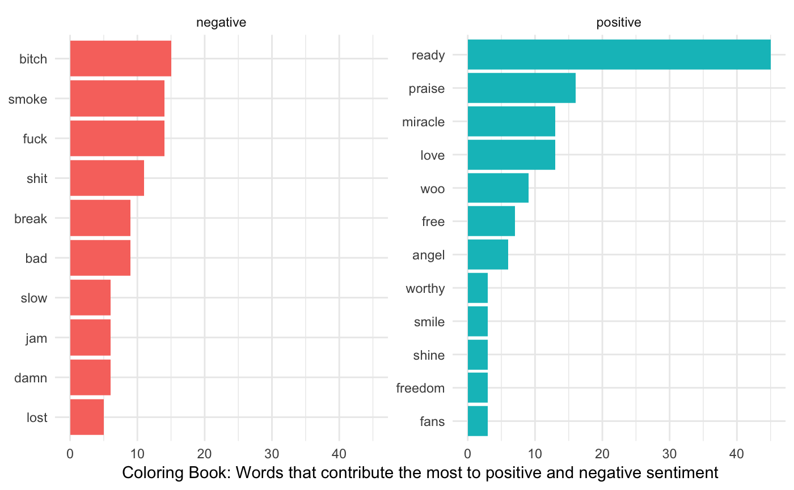

Tools for working with the Genius API.
- Genius Developers Site: https://genius.com/developers
- Genius API Docs: https://docs.genius.com/
Authenticate
- Create a Genius API client
- Generate a client access token from your API Clients page
- Set your credentials in the System Environment variable
GENIUS_API_TOKENby calling thegenius_token()function and entering your Genius Client Access Token when prompted.
Use
How many times did Kanye West say “good morning”, on the track “Good Morning”?
library(geniusr)
library(dplyr)
library(tidytext)
# Get song search results for the term 'good morning'
gm_search <- search_song(search_term = "good morning") %>%
# look for Kanye as the primary artist
filter(artist_name == "Kanye West")
# get lyrics
gm_lyrics <- scrape_lyrics_id(song_id = gm_search$song_id)
# tokenization of the lyrics
gm_lyrics %>%
# get bigrams
unnest_tokens(bigram, line, token = "ngrams", n = 2) %>%
# count bigram frequency
count(bigram) %>%
# look for good morning
filter(bigram == "good morning")
#> # A tibble: 1 x 2
#> bigram n
#> <chr> <int>
#> 1 good morning 18Gimme artist’s with ‘Lil’ in their name.
# return artist matches for term 'lil'
search_artist(search_term = "Lil", n_results = 500) %>%
distinct(artist_name)
#> # A tibble: 73 x 1
#> artist_name
#> <chr>
#> 1 Lil Uzi Vert
#> 2 Lil Pump
#> 3 Kanye West & Lil Pump
#> 4 Lil Wayne
#> 5 Chance the Rapper
#> 6 Kodak Black
#> 7 Lil Peep
#> 8 Lil Baby & Drake
#> 9 Tay-K
#> 10 Ski Mask the Slump God
#> # … with 63 more rowsPositive / Negative Sentiment in Coloring Book, by Chance the Rapper
library(purrr)
library(ggplot2)
# set lexicon
bing <- get_sentiments("bing")
# search for Chance
search_song(search_term = "Chance")
#> # A tibble: 10 x 5
#> song_id song_name song_lyrics_url artist_id artist_name
#> <int> <chr> <chr> <int> <chr>
#> 1 2471960 No Problem (Ft.… https://genius.com/Chan… 16751 Chance the …
#> 2 146864 Cocoa Butter Ki… https://genius.com/Chan… 16751 Chance the …
#> 3 146855 Favorite Song (… https://genius.com/Chan… 16751 Chance the …
#> 4 113663 Juice https://genius.com/Chan… 16751 Chance the …
#> 5 146865 Pusha Man/Paran… https://genius.com/Chan… 16751 Chance the …
#> 6 2472248 Same Drugs https://genius.com/Chan… 16751 Chance the …
#> 7 2468090 Blessings (Ft. … https://genius.com/Chan… 16751 Chance the …
#> 8 146915 Lost (Ft. Nonam… https://genius.com/Chan… 16751 Chance the …
#> 9 2339009 Angels (Ft. Sab… https://genius.com/Chan… 16751 Chance the …
#> 10 119999 Acid Rain https://genius.com/Chan… 16751 Chance the …
# search track on Coloring Book
get_song_meta(song_id = 2471960)
#> # A tibble: 1 x 13
#> song_id song_name song_lyrics_url song_art_image_… release_date pageviews
#> <int> <chr> <chr> <chr> <chr> <int>
#> 1 2471960 No Probl… https://genius… https://images.… 2016-05-12 2294713
#> # … with 7 more variables: annotation_count <int>, artist_id <int>,
#> # artist_name <chr>, artist_url <chr>, album_id <int>, album_name <chr>,
#> # album_url <chr>
# scrape album tracklist
tracklist <- scrape_tracklist(album_id = 150853)
# scrape album lyrics
lyrics <- map_df(tracklist$song_lyrics_url, scrape_lyrics_url)
# counting negative / positive words
sentiment <- lyrics %>%
unnest_tokens(word, line) %>%
# remove stop words
anti_join(stop_words) %>%
# join afinn score
inner_join(bing) %>%
# count negative / positive words
count(word, sentiment, sort = TRUE) %>%
ungroup()
# plotting top contributors
sentiment %>%
group_by(sentiment) %>%
top_n(10) %>%
ungroup() %>%
mutate(word = reorder(word, n)) %>%
ggplot(aes(word, n, fill = sentiment)) +
geom_col(show.legend = FALSE) +
facet_wrap(~sentiment, scales = "free_y") +
labs(y = "Coloring Book: Words that contribute the most to positive and negative sentiment",
x = NULL) +
coord_flip() +
theme_minimal()
Other options
- the geniusR package provides a similar API interface.